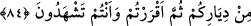

cihâddan daha fazîletli görürdü.
Gönlünün darmadağın olmasını istemezsen,
Darmadağınık olanları hatırdan çıkarma!
Bugün hazîneyi çarçabuk dağıtmaya bak,
Yarın o hazînenin anahtarı elinde olmayacaktır.
Bir diğer işâret iyi söz; yâni “kavl-i hasen”dir. Kul, Hakk’a âid ibâdetini yapıp
rahmet ve şefkati anne-baba ve diğer insanlara şâmil olunca insanlara güzel söz
söylemesi gerekir. İnsanlara iyiliği emredip kötülüğü nehyetmelidir. Onları hikmet ve
güzel nasîhatle Allah’a ve hak yola götürmeye, güzel ahlâkla ahlâklanmaya
çağırmalıdır. Böyleleri, fâcir, kötü huylu, bid’at sâhibi bile olsalar, herkese karşı
yumuşak sözle ve güler yüzle incitmeden davranmalıdırlar. Aynı zamanda sözlerinde
onların yolunu benimsiyormuş gibi bir his uyandırmadan, iyilik yapmalıdırlar. Çünkü
Cenâb-ı Hak; Mûsâ ve Hârûn’a: “Fir’avn’a gidin ona yumuşak sözle uyarıda
bulunun” (Tâhâ, 20/44) buyurdu. Şimdi kul, Mûsâ ve Hârûn’dan fazîletli, fâcir
Fir’avn’dan daha kötü değildir. Allah Teâlâ bu âyetle yahûdî ve hıristiyanlara dahi
yumuşak sözle yaklaşılmasını emrediyorsa, müslüman olanlara nasıl davranılması
gerektiğini düşünmek lâzım.
Hâfız der ki:
Dünyâ ve âhıret emniyeti şu iki cümlenin açıklamasındadır:
Dostlarına iyi ve güzel davran, düşmanlarını da idâre et!”
Sa’dî de diyor ki:
Sertlik ve kabalığın, akıllıya te’sîri olmaz.
Gevşeklik ve yumuşaklık îmânın kadrini düşürür.
84. (Ey İsrâîloğulları!) Birbirinizin kanını dökmeyeceğinize, birbirinizi
yurtlarınızdan çıkarmayacağınıza dâir sizden söz almıştık. Her şeyi görerek
sonunda bunları kabûl etmiştiniz.
Ey yahûdîler, Tevrât’ta sizden aldığımız ahid ve ikrâr vaktini ve size “kan dökmeyin”
dediğimizi hatırlayın. Birbirinizin kanını akıtmayın, demiştik. Kişi neseb ve din
îtibârıyla birisinin kardeşi olduğunda sanki onunla aynîleşmiş gibi olur. İşte aradaki dînî
ve nesebî bağ yüzünden de onlardan her biri, kendi nefisleri yerine konuldu ve bir
kimse başka birini öldürdüğünde sanki kendini öldürmüş gibi kabûl edildi. Çünkü o da
onun yerine kısas edilirdi. Bu cümle, nehy mânâsına ihbârî cümledir. Burada sanki kan